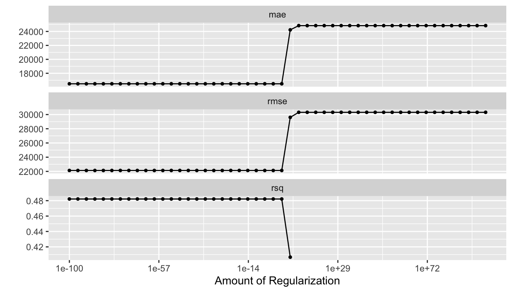
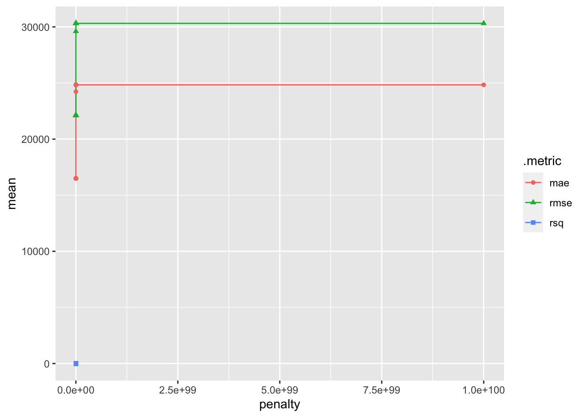
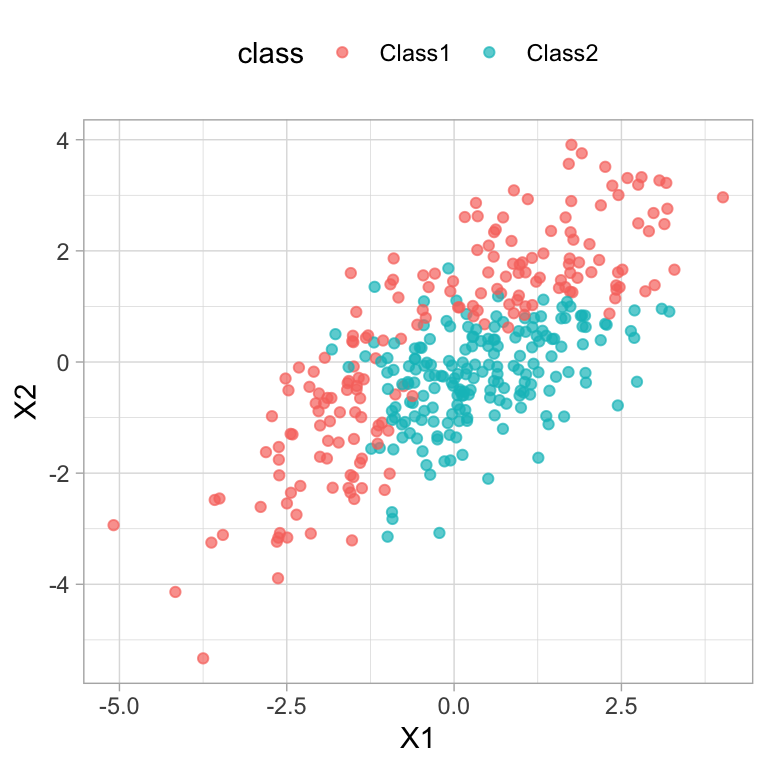

Regularization
บทที่ 6 : Regularized Regression
Linear regression เป็นโมเดลทำนายที่มีจุดเด่นคือเป็นโมเดลอย่างง่ายที่นอกจากจะใช้ทำนายแนวโน้มของตัวแปรอิสระได้แล้ว ยังสามารถใช้ในการอธิบายความสัมพันธ์ระหว่างตัวแปรตามกับตัวแปรอิสระได้ง่ายและชัดเจนกว่าการใช้โมเดลการเรียนรู้อื่น ๆ อย่างไรก็ตามการใช้งาน linear regression นั้นอยู่ภายใต้ข้อจำกัดหรือข้อตกลงเบื้องต้นที่เคร่งครัดหลายตัว ซึ่งหากข้อตกลงเบื้องต้นดังกล่าวไม่เป็นจริงแล้วการทำนายหรือการอธิบายความสัมพันธ์ด้วย linear regression ก็อาจจะมีปัญหาและขาดความน่าเชื่อถือ
บทเรียนนี้จะ focus ไปที่ปัญหาหนึ่งที่สำคัญและเกิดขึ้นบ่อยในการพัฒนาโมเดลทำนายทั้งใน linear regression และอัลกอริทึมอื่น ๆ คือการที่โมเดลทำนายมีจำนวนตัวแปรอิสระหรือเทอมของตัวแปรอิสระมากเกินไป สถานการณ์ดังกล่าวอาจก่อให้เกิดปัญหาในเชิงเทคนิคหลายประการ ดังนี้
- overfitting model กล่าวคือการมีตัวแปรอิสระหรือเทอมของตัวแปรอิสระ เช่น เทอมพหุนาม (polynomial) หรือเทอมปฏิสัมพันธ์ (interaction) จำนวนมากเกินไปภายในโมเดล ย่อมทำให้โมเดลเรียนรู้ความสัมพันธ์ในชุดข้อมูลฝึกหัดดีเกินไป และก่อให้เกิดปัญหา overfitting ได้
- infinite solution ปัญหานี้เป็นปัญหาเชิงเทคนิค กล่าวคือผู้วิเคราะห์มีจำนวนตัวแปรอิสระหรือเทอมของตัวแปรอิสระ (จำนวนคอลัมน์) ที่ต้องการนำเข้าสู่โมเดลมากกว่าจำนวนหน่วยข้อมูล (จำนวนแถว) สถานการณ์ดังกล่าวทำให้ไม่สามารถหาคำตอบเดียวของค่าประมาณพารามิเตอร์ภายในโมเดลทำนายได้
- multicollinearity ปัญหานี้เป็นปัญหาในเชิงเทคนิคที่เกิดขึ้นเมื่อผู้วิเคราะห์มีตัวแปรอิสระจำนวนมากในโมเดล โดยที่ตัวแปรอิสระดังกล่าวมีความซ้ำซ้อนกัน (redundant) กล่าวคือมีความสัมพันธ์ซึ่งกันและกันเองสูงเกินไป สถานการณ์เช่นนี้จะทำให้การประมาณค่าพารามิเตอร์ในโมเดลมีแนวโน้มที่จะไม่เสถียร (unstable solution) ส่งผลให้โมเดลทำนายที่ได้มีความไม่เสถียรตามไปด้วย โมเดลทำนายที่ได้จากสถานการณ์ดังกล่าวจึงจะขาดความน่าเชื่อถือ
ในบทที่ 6 เราได้กล่าวถึงการคัดเลือกตัวแปรอิสระเข้าสู่โมเดลด้วยวิธีในกลุ่ม wrapper method ซึ่งผู้อ่านจะเห็นว่าวิธีการดังกล่าวนั้นมีข้อจำกัดสำคัญคือ เป็นวิธีที่ใช้ข้อมูลจากชุดข้อมูลฝึกหัดในการคัดเลือกตัวแปรอิสระแต่เพียงอย่างเดียว ซึ่งอาจทำให้มีความเสี่ยงสูงที่การพัฒนาโมเดลทำนายภายใต้ผลการคัดเลือกตัวแปรอิสระดังกล่าวจะมีปัญหา overfitting ตามมา บทเรียนนี้จะกล่าวถึงเทคนิค regularization ที่สามารถทำมาใช้เพื่อแก้ปัญหาดังกล่าว ปัจจุบันมีการนำเทคนิคนี้ไปใช้ในหลายโมเดลทั้ง linear regression, decision tree ไปจนถึง neural network โดยในบทเรียนนี้จะกล่าวถึงมโนทัศน์สำคัญของการทำ regularization และการนำเทคนิค regularization ไปใช้ในอัลกอริทึม linear regression รายละเอียดมีดังนี้
6.1 มโนทัศน์สำคัญของ regularized regression
concept ของ regularization เป็นเรื่องเกี่ยวกับการปรับสมดุลของโมเดลทำนายเพื่อลดทอนหรือแก้ปัญหา overfitting และ/หรือ ปัญหาตัวอย่างอิสระ สำหรับโมเดล linear regression การปรับสมดุลดังกล่าวจะเป็นการปรับค่าสัมประสิทธิความชันของสมการถดถอยให้น้อยลงเพื่อลดหรือลบผลกระทบของตัวแปรอิสระบางตัวออกจากโมเดลอย่างเหมาะสม
เพื่อให้ผู้อ่านเห็นภาพและเข้าใจมโนทัศน์ของ regularization ได้อย่างชัดเจน อยากให้ผู้อ่านลองพิจารณาตัวอย่างง่าย ๆ ต่อไปนี้
สมมุติว่าผู้วิเคราะห์ต้องการสร้างโมเดลทำนายคะแนนผลสัมฤทธิ์ทางการเรียนของนักเรียน (ACH) โดยใช้จำนวนชั่วโมงการทบทวนบทเรียนต่อสัปดาห์ของนักเรียน (HOUR) เป็นตัวแปรทำนาย แผนภาพการกระจายด้านล่าง (พิจารณาเฉพาะจุด) จะเห็นว่าความสัมพันธ์ระหว่างตัวแปรทั้งสองมีลักษณะเป็นความสัมพันธ์เชิงเส้น (linear relationship) ที่ค่อนข้างชัดเจน ในกรณีนี้ผู้วิเคราะห์จึงเลือกใช้อัลกอริทึม linear regression เป็นอัลกอริทึมการเรียนรู้ เพื่อสร้างโมเดลทำนายที่ต้องการ
การสร้างโมเดลทำนายด้วย linear regression อัลกอริทึมจะพยายามหาสมการเส้นตรงที่ดีที่สุด โดยการคัดเลือกชุดของสัมประสิทธิ์การถดถอย (จุดตัดแกน y และความชัน) ที่ทำให้ฟังก์ชันวัตถุประสงค์ (objective function) มีค่าสูงหรือต่ำที่สุด โดยทั่วไปฟังก์ชันวัตถุประสงค์มักใช้เป็น sum squared error (SSE) การหาค่าประมาณของสัมประสิทธิ์ถดถอยดังกล่าวจึงเป็นการหาค่าที่ทำให้ SSE มีค่าต่ำที่สุด
การหาค่าประมาณพารามิเตอร์ดังกล่าวสามารถทำได้หลายวิธีการ วิธีการแรกที่มักใช้กันในฝั่ง data analysis คือการใช้การ optimization ด้วย first และ second order derivative (ใช้ขั้นตอนวิธีของ calculas) ในโมเดล linear regression ทั่วไปวิธีการนี้สามารถให้สูตรปิดของการหาค่าประมาณสัมประสิทธิ์การถดถอยดังกล่าวได้ อีกวิธีการหนึ่งคือการใช้อัลกอริทึมเชิงตัวเลข (numerical algorithm) เรียกว่า gradient descent หรือ stochastic gradient descent ซึ่งเป็นกระบวนการทวนซ้ำเพื่อหาชุดของสัมประสิทธิ์การถดถอยที่เหมาะสมที่สุดโดยอิงจากค่าของฟังก์ชันวัตถุประสงค์ที่กำหนด
เมื่อกำหนดให้ข้อตกลงเบื้องต้นอื่น ๆ ของ linear regression เป็นจริง และตัวแปรอิสระที่เลือกเข้าสู่โมเดลเป็นตัวแปรอิสระที่มีคุณภาพ กล่าวคือ (1) ให้สารสนเทศในการทำนายตัวแปรตาม และ (2) ไม่ซ้ำซ้อนกันเองกับตัวแปรอิสระอื่น ๆ โมเดลทำนายที่ได้จากอัลกอริทีมจะมีคุณสมบัติที่ดีในทางสถิติกล่าวคือมีความไม่ลำเอียงและมีความแปรปรวนต่ำที่สุด หนังสือสถิติจะเขียนว่าตัวประมาณที่ได้จาก OLS regression เป็นตัวประมาณ BLUE ซึ่งย่อมาจาก Best Linear Unbised Estimator (สามารถพิสูจน์ได้โดยใช้ Gauss-Markov Theorem)
โดยปกติ linear regression เป็นโมเดลที่ง่ายที่สุดสำหรับทำนาย กล่าวคือเป็นโมเดลที่มีแนวโน้มจะมีประสิทธิภาพในการทำนายที่ไม่สูงมากนัก แต่จุดเด่นคือมีความยืดหยุ่นในการนำไปใช้ทำนายชุดข้อมูลอื่นนอกเหนือจากชุดข้อมูลฝึกหัดสูง linear regression อย่างไรก็ตามหากหากชุดข้อมูลฝึกหัดไม่ได้เป็นตัวแทนที่ดีของประชากร หรือในขั้นตอนของการพัฒนาโมเดลผู้วิเคราะห์มีการใส่ตัวแปรอิสระหรือเทอมของตัวแปรทำนาย เช่น polynomial หรือ interaction terms ที่ไม่ให้สารสนเทศจำนวนมากเข้าไปในโมเดล สถานการณ์เช่นนี้มักเพิ่มโอกาสที่โมเดลจะเกิดปัญหา overfitting ซึ่งทำให้โมเดลทำนายที่พัฒนาได้นั้นไม่สามารถทำนายชุดข้อมูลทดสอบหรือข้อมูลอื่น ๆ ที่อยู่นอกเหนือชุดข้อมูลฝึกหัดได้อย่างมีประสิทธิภาพ
รูปด้านล่างแสดงสภาพของปัญหา overfitting ที่เกิดขึ้นในโมเดลทำนาย ACH ด้วย HOUR ดังกล่าว จากรูปเมื่อพิจารณาจุดและเส้นโมเดลทำนาย (สีเขียว) จะพบว่าโมเดลเรียนรู้ความสัมพันธ์ระหว่างตัวแปรทั้งสองในชุดข้อมูลฝึกหัดได้ดี แต่เมื่อนำโมเดลดังกล่าวไปใช้ทำนาย ACH ในชุดข้อมูลทดสอบจะพบว่า สมการทำนายเส้นสีเขียวกลายเป็นสมการที่ไม่เหมาะสมในกรณีทั่วไป โดยจะให้ค่าความคลาดเคลื่อนในการทำนาย (SSE) ของชุดข้อมูลทดสอบที่สูงมากกว่า SSE ในชุดข้อมูลฝึกหัดค่อนข้างมาก เส้นสมการทำนายที่เหมาะสมควรเป็นสมการเส้นสีเทาในรูปมากกว่า
การแก้ปัญหาดังกล่าวผู้วิเคราะห์จะต้องปรับแต่งโมเดลการทำนายใหม่ให้มีความสมดุลในการทำนายชุดข้อมูลที่ไม่รู้จักได้มากขึ้น เทคนิค regularization ถูกพัฒนาขึ้นเพื่อใช้สำหรับการปรับแต่งโมเดลทำนายดังกล่าว คำถามคือการปรับแต่งโมเดลทำนายนั้นควรดำเนินการอย่างไร?
รูปด้านล่างแสดงแนวคิดหลักของ regularization จากรูปจะเห็นว่าโมเดลทำนายเส้นสีเขียวนั้นเกิดปัญหา overfitting ขึ้นกล่าวคือ โมเดลทำนายดังกล่าวเรียนรู้ความสัมพันธ์ในชุดข้อมูลฝึกหัด (จุดสีเขียว) ได้ดีมากเกินไป กล่าวคือโมเดลทำนายนี้มีความแปรปรวนสูงมากเกินไปนั่นเอง จากมโนทัศน์เกี่ยวกับ bias & variance trace-off เราทราบว่าความลำเอียงกับความแปรปรวนของโมเดลทำนายนั้นมีความสัมพันธ์ที่ผกผันกัน โดยโมเดลที่มีความลำเอียงต่ำมีแนวโน้มที่จะมีความแปรปรวนสูง ในทางกลับกันโมเดลที่มีความลำเอียงสูงก็มีแนวโน้มที่จะมีความแปรปรวนต่ำ ดังนั้นจากความสัมพันธ์นี้หากผู้วิเคราะห์มีโมเดลทำนายที่มีความแปรปรวนสูง ผู้วิเคราะห์อาจปรับแต่งโมเดลทำนายดังกล่าวให้มีความแปรปรวนต่ำลงได้ด้วยการเพิ่มความลำเอียงให้กับโมเดลทำนายดังกล่าวอย่างเหมาะสม ดังตัวอย่างในรูป (b) ด้านล่าง
สำหรับ linear regression สามารถใส่ความลำเอียงให้กับโมเดลทำนายได้ในขั้นตอนของการหาค่าประมาณพารามิเตอร์ของโมเดล โดยปรับสูตรของฟังก์ชันวัตถุประสงค์ใหม่จากเดิม \(SSE = \sum_{i=1}^n(y_i-\hat{y}_i)^2\) เป็น
\[ SSE_{reg}=\sum_{i=1}^n(y_i-\hat{y}_i)^2 + P = SSE + P \]
เรียกเทอม \(P\) ในสมการข้างต้นว่า penality term หนังสือบางเล่มเลยอาจใช้ชื่อ penalized regression แทน regularized regression ผู้อ่านลองสังเกตการบวกเทอม \(P\) ดังกล่าวในฟังก์ชันวัตถุประสงค์ โดยจะเห็นว่าเมื่อ \(P>0\) จะทำให้ค่า \(SSE_{reg} > SSE\) ซึ่งเป็นการทำให้ค่าประมาณพารามิเตอร์ได้แก่ สัมประสิทธิจุดตัดแกน และความชันในโมเดลทำนายนั้น มีแนวโน้มที่มีความลำเอียงมากกว่าโมเดลทำนายที่ไม่ได้ใส่ penalty term ดังกล่าว ซึ่งหากใส่อย่างเหมาะสมจะช่วยลดความแปรปรวนของโมเดลทำนายได้อย่างที่ได้กล่าวไปแล้ว
ค่า\(P\) ดังกล่าวไม่ใช่พารามิเตอร์ที่สามารถประมาณได้โดยตรงจากข้อมูล กล่าวคือเป็น hyperparameter ที่ต้องกำหนดโดยผู้วิเคราะห์ก่อนที่จะดำเนินการประมาณค่าพารามิเตอร์ของโมเดล คำถามใหญ่ของการทำ regularization จึงเกิดขึ้นว่า การกำหนดค่า \(P\) ดังกล่าวให้เหมาะสมควรดำเนินการอย่างไร?
แนวคิด regularization ดังกล่าวสามารถนำไปประยุกต์ใช้กับอัลกอริทึมการเรียนรู้ได้อีกหลายตัว เช่น ใน regularized logistic regression ฟังก์ชันวัตถุประสงค์จะสามารถเขียนได้เป็น \(lnL + P\) เมื่อ \(lnL\) คือ log-likelihood function ของโมเดล หรือใน decision tree (มักเรียกว่า pruning tree) ฟังก์ชันวัตถุประสงค์จะเขียนได้เป็น \(R_{reg}(T) = R(T) + \alpha|T|\) โดยที่ \(R(T)\) คือ training error ของ decision tree ที่มีจำนวน terminal nodes เท่ากับ \(T\) และจะเรียก \(\alpha\) ว่า cost complexity hyperparameter
6.2 ประเภทของ Regularization
การกำหนดค่า \(P\) ให้กับฟังก์ชันวัตถุประสงค์ในข้างต้นอาจดำเนินการโดยจำแนกได้เป็น 3 วิธี ดังนี้
- Ridge regression
- Lasso regression
- Elastic-Net regression
Ridge Regression
ฟังก์ชันวัตถุประสงค์ของ regularized regression ประเภท ridge regression สามารถเขียนได้ดังนี้
\[ SSE_{ridge} = SSE+\lambda\sum_{j=1}^kb_j^2 \]
จากสมการข้างต้นจะเห็นว่า \(P = \lambda\sum_{j=1}^kb_j^2\) คือ penalty term ในกรณีนี้จะเรียกว่า ridge regression penalty หรือหนังสือบางเล่มอาจจะเรียกว่า L2 norm การกำหนด penalty term ดังกล่าวทำให้เกิดผลอย่างไรต่อการพัฒนาโมเดลทำนาย สามารถทำความเข้าใจง่าย ๆ ได้จากการพิสูจน์ด้านล่าง ผู้อ่านจะเห็นว่าตัวประมาณของสัมประสิทธิ์การถดถอยใน ridge regression จะมีเทอม \(\lambda\) เพิ่มเข้ามาในเทอมตัวหาร เมื่อเปรียบเทียบกับ linear regression แบบ OLS ธรรมดา ผู้อ่านจะเห็นได้อย่างชัดเจนว่าเมื่อ \(\lambda = 0\) ค่าประมาณของสัมประสิทธิ์ความชันจากทั้งสองวิธีการจะเท่ากัน แต่เมื่อกำหนดให้ \(\lambda>0\) ค่าประมาณของสัมประสิทธิ์ความชันที่ได้จาก ridge regression จะมีแนวโน้มที่ลดลงต่ำกว่า ols regression อย่างไรก็ตามหากลองพิจารณา \(lim_{\lambda \rightarrow \infty}\frac{\sum x_iy_i}{\sum x_i^2+\lambda}\) จะพบว่าค่าสัมประสิทธิ์ความชันของ ridge regression จะมีค่าลู่เข้าใกล้ 0 แต่จะไม่เท่ากับ 0
จากผลในข้างต้นจะเห็นว่า ridge regression เป็นเทคนิคที่ช่วยปรับขนาดของสัมประสิทธิ์ความชันของตัวแปรอิสระในโมเดลให้มีค่าลดลง แต่จะไม่ได้ทำให้เป็น 0 ดังนั้นตัวแปรอิสระทั้งหมดที่ผู้วิเคราะห์นำเข้าในอัลกอริทึมตอนแรกนั้นจะอยู่ในโมเดลทำนายครบทุกตัว แต่จะถูกปรับลดขนาดของค่าสัมประสิทธิ์ความชันลง ดังนั้น ridge regression จึงไม่ใช่เทคนิคสำหรับคัดเลือกตัวแปรอิสระ แต่เป็นเทคนิคที่เหมาะสำหรับแก้ปัญหา multicollinearity มากกว่า ดังนั้น ridge regression จึงเหมาะที่จะใช้ในสถานการณ์ที่ผู้วิเคราะห์มีตัวแปรอิสระจำนวนมากและตัวแปรดังกล่าวมีความสัมพันธ์กันเองสูงหรือมีความซ้ำซ้อนกัน แต่ผู้วิเคราะห์ไม่ต้องการที่จะตัดตัวแปรอิสระตัวใดออกจากโมเดลทำนาย อัลกอริทึม ridge regression จะช่วยให้ผู้วิเคราะห์สามารถสร้างโมเดลทำนายที่มีตัวแปรอิสระทั้งหมดอยู่ภายในโมเดลโดยหลีกเลี่ยงหรือลดทอนผลกระทบที่เกิดจากปัญหา multicollinearity ได้
ข้อสังเกตหนึ่งคือถึงแม้ว่าในชุดข้อมูลของผู้วิเคราะห์จะมีตัวแปรอิสระที่ไม่ให้สารสนเทศในการทำนายอยู่ด้วย แต่ ridge regression ก็จะไม่ได้ตัดตัวแปรอิสระดังกล่าวออกจากโมเดล ภายใต้สถานการณ์ดังกล่าวการใช้อัลกอริทึม ridge regression ก็จะไม่เหมาะสมควรเปลี่ยนไปใช้ lasso หรือ elastic-net regression มากกว่า
Lasso Regression
Lasso regression เป็นอัลกอริทึมที่ถูกพัฒนาขึ้นโดยมีวัตถุประสงค์หลักคือการคัดเลือกตัวแปรอิสระ (feature selection) เข้าสู่โมเดลทำนาย อัลกอริทึมนี้เป็น feature selection ที่จัดอยู่ในกลุ่ม embedded method กล่าวคือเป็นอัลกอริทึมการเรียนรู้ที่มีอัลกอริทึมของการคัดเลือกตัวแปรอิสระรวมอยู่ในขั้นตอนการประมาณค่าพารามิเตอร์ของโมเดล หลักการของ lasso regression เหมือนกับ ridge regression แต่มีการใช้ penalty term ในฟังก์ชันวัตถุประสงค์ที่แตกต่างออกไปดังนี้
\[ SSE_{lasso} = SSE+\lambda\sum_{j=1}^k |b_j| \]
จะเห็นว่ามีการเปลี่ยนแปลงจากการใช้ฟังก์ชันกำลังสองเป็นค่าสมบูรณ์ใน penalty term ผลกระทบที่เกิดขึ้นกับโมเดลทำนายเมื่อใช้ penalty term ดังกล่าวสามารถอธิบายได้โดยใช้การพิสูจน์ง่าย ๆ ด้านล่าง ผู้อ่านจะเห็นว่าตัวประมาณของสัมประสิทธิ์ความชันในโมเดลทำนายมีรูปแบบที่เปลี่ยนแปลงไปจาก ridge regression โดยเทอม \(\lambda\) ไม่ได้อยู่ในส่วนของตัวเศษแล้ว แต่ขึ้นมาอยู่ที่ตัวเศษแทน ดังนั้นการกำหนด \(\lambda\) ที่เหมาะสมจึงสามารถทำให้ค่าสัมประสิทธิ์ความชันดังกล่าวมีค่าเท่ากับ 0 ได้ ซึ่งหมายถึงการตัดตัวแปรอิสระดังกล่าวออกจากโมเดลทำนาย ด้วยหลักการดังกล่าวอัลกอริทึม lasso regression จึงสามารถคัดเลือกตัวแปรอิสระเข้าสู่โมเดลได้ด้วยการกำหนดค่า \(\lambda\) ดังกล่าว
Elastic-Net Regression
อัลกอริทึมนี้เป็นการผสมกันระหว่าง ridge และ lasso regression จึงเป็นอัลกอริทึมที่สามารถใช้ทั้งแก้ปัญหา multicollineatiry และคัดเลือกตัวแปรอิสระไปพร้อม ๆ กัน ฟังก์ชันวัตถุประสงค์ของ elastic-net regression เป็นดังนี้
\[ SSE_{elasticnet}=SSE+(1-\alpha)\lambda_1\sum_{j=1}^kb_j^2+\alpha\lambda_2\sum_{j=1}^k|b_j| \]
โดยที่ \(\alpha\) เรียกว่า mixing parameter ซึ่งมีค่าที่เป็นไปได้อยู่บนช่วง 0 ถึง 1 ทำหน้าที่สำหรับกำหนดน้ำหนักให้กับ penalty term ทั้งสอง
\(\lambda\) และ \(\alpha\) ที่อยู่ในฟังก์ชันวัตถุประสงค์ของอัลกอริทึมทั้ง 3 ตัวเป็น hyperparameters ของอัลกอริทึม กล่าวคือผู้วิเคราะห์จะต้องกำหนดค่าของพารามิเตอร์ทั้งสองเอง ในทางปฏิบัติผู้วิเคราะห์สามารถปรับแต่งค่า hyperparameters ดังกล่าวได้โดยใช้ตัวอย่างที่ได้จากการสุ่มซ้ำ เช่น cross-validation หรือ bootstraping ในทำนองเดียวกับการปรับแต่ง hyperparameter ของ decision tree ที่กล่าวถึงในบทที่ 5
6.3 Implement regularized regression using tidymodels
การพัฒนาโมเดลทำนายโดยใช้การทำ regularization ใน R สามารถทำได้หลายวิธี เช่น การใช้ฟังก์ชัน cv.glmnet() ของ package glmnet หรือการใช้ tuneGrid() ใน package caret ในหัวข้อนี้จะกล่าวถึงการพัฒนาอัลกอริทึมดังกล่าวภายใต้ tidymodels framework ชุดข้อมูลที่ใช้เป็นตัวอย่างจะมี 2 ชุด ชุดแรกคือ TeacherSalaryData.csv และชุดที่สองคือ gpax.csv
โมเดลทำนายเงินเดือนครู
ตัวอย่างนี้จะพัฒนาโมเดลทำนายเงินเดือนครูโดยจะใช้อัลกอริทึม regularization ก่อนที่จะเริ่มพัฒนาโมเดล ผู้วิเคราะห์ควรเริ่มจากการสำรวจข้อมูลเบื้องต้นก่อน จากวัตถุประสงค์ของงานนี้อาจจำแนกการสำรวจข้อมูลออกเป็นสองส่วน ส่วนแรกคือการสำรวจรูปแบบตารางข้อมูล ขอบเขตข้อมูล และลักษณะการจัดเก็บ/บันทึกข้อมูล และส่วนที่สองคือการสำรวจลักษณะความสัมพันธ์ระหว่างตัวแปรตามคือเงินเดือนครู (salary) และตัวแปรอิสระต่างในโมเดล
library(tidymodels)
tidymodels_prefer()
#importing data
dat <- read.csv("https://raw.githubusercontent.com/ssiwacho/2758688_ML/main/week%201/TeacherSalaryData.csv")
glimpse(dat)Rows: 397
Columns: 7
$ X <int> 1, 2, 3, 4, 5, 6, 7, 8, 9, 10, 11, 12, 13, 14, 15, 16, 1…
$ rank <chr> "Prof", "Prof", "AsstProf", "Prof", "Prof", "AssocProf",…
$ discipline <chr> "B", "B", "B", "B", "B", "B", "B", "B", "B", "B", "B", "…
$ yrs.since.phd <int> 19, 20, 4, 45, 40, 6, 30, 45, 21, 18, 12, 7, 1, 2, 20, 1…
$ yrs.service <int> 18, 16, 3, 39, 41, 6, 23, 45, 20, 18, 8, 2, 1, 0, 18, 3,…
$ sex <chr> "Male", "Male", "Male", "Male", "Male", "Male", "Male", …
$ salary <int> 139750, 173200, 79750, 115000, 141500, 97000, 175000, 14…จากผลการสำรวจข้อมูลข้างต้นจะเห็นว่าชุดข้อมูลดังกล่าวเป็นชุดข้อมูลขนาดเล็ก มีรูปแบบตารางเป็นแบบ tidydata แล้ว โดยมีหน่วยข้อมูลทั้งหมดจำนวน 397 หน่วย มีตัวแปรที่สามารถนำมาใช้เป็นตัวแปรอิสระในโมเดลได้ 5 ตัวแปร ได้แก่ rank, discipline, yrs.since.phd, yrs.service และ sex ผู้อ่านจะเห็นว่าตัวแปรอิสระดังกล่าวมีทั้งตัวแปรที่เป็นเชิงปริมาณ และตัวแปรจัดประเภท โดยในกลุ่มของตัวแปรจัดประเภทพบว่าทุกตัวแปรถูกจัดเก็บอยู่ในรูปแบบของตัวอักษร ซึ่งไม่เหมาะสมที่จะนำเข้าสู่โมเดลทำนาย
# exploring data using statistics
summary(dat) X rank discipline yrs.since.phd
Min. : 1 Length:397 Length:397 Min. : 1.00
1st Qu.:100 Class :character Class :character 1st Qu.:12.00
Median :199 Mode :character Mode :character Median :21.00
Mean :199 Mean :22.31
3rd Qu.:298 3rd Qu.:32.00
Max. :397 Max. :56.00
yrs.service sex salary
Min. : 0.00 Length:397 Min. : 57800
1st Qu.: 7.00 Class :character 1st Qu.: 91000
Median :16.00 Mode :character Median :107300
Mean :17.61 Mean :113706
3rd Qu.:27.00 3rd Qu.:134185
Max. :60.00 Max. :231545 dat %>%
select(salary, yrs.since.phd, yrs.since.phd) %>%
cor() salary yrs.since.phd
salary 1.0000000 0.4192311
yrs.since.phd 0.4192311 1.0000000# exploring data using visualization
dat %>%
select(-X) %>%
pivot_longer(cols=c("yrs.since.phd","yrs.service"),
names_to="predictor",values_to="value")%>%
ggplot()+
geom_point(aes(x=value, y=salary))+
facet_wrap(.~ factor(predictor),
scales = "free_x")
dat %>%
select(-X) %>%
pivot_longer(cols=c("discipline","rank","sex"),
names_to="predictor",values_to="value")%>%
ggplot()+
geom_boxplot(aes(x=value, y=salary, fill=value))+
facet_wrap(.~ factor(predictor),
scales = "free_x")+
theme(legend.position="none")
นอกจากนี้ผู้วิเคราะห์ยังลองตรวจสอบว่ามีอิทธิพลปฏิสัมพันธ์ระหว่างตัวแปรอิสระที่มีต่อตัวแปรตามหรือไม่ โดยใช้ visualization เป็นเครื่องมือตรวจสอบเช่นเดียวกัน


ผลการสำรวจความสัมพันธ์ระหว่างตัวแปรข้างต้นเป็นอย่างไร ?
ใน tidymodels framework การเรียกใช้อัลกอริทึม ridge regression, lasso regression หรือ elastic-net regression สามารถทำได้โดยเลือก model type เป็น linear_reg() และกำหนด engine เป็น glmnet เมื่อพิจารณาการกำหนดอาร์กิวเมนท์ของ glmnet ในคู่มือ https://www.tidymodels.org/find/parsnip/ พบว่า engine ดังกล่าวสามารถใช้ได้กับ model type ทั้ง linear regression, logistic regression และ multinomial regression ซึ่งสอดคล้องกับที่ได้กล่าวในส่วนภาคทฤษฎีว่าหลักของการ regularization สามารถนำไปใช้ได้กับอัลกอริทึมการเรียนรู้ได้มากมาย
จากตารางจะเห็นว่า glmnet มีอาร์กิวเมนท์ 2 ตัวได้แก่ penalty และ mixture ที่เป็น hyperparameters ของอัลกอริทึม โดยที่
penaltyคือ regularization hyperparametermixtureคือสัดส่วนของ lasso penalty (เท่ากับค่า \(\alpha\) ใน part ทฤษฎี) หาก \(\alpha =1\) หมายถึงกำหนดให้ใช้อัลกอริทึมแบบ lasso แต่หาก \(\alpha = 0\) หมายถึงกำหนดให้ใช้อัลกอริทึม ridge regression และหากกำหนดให้ \(\alpha \in (0,1)\) หมายถึงกำหนดให้ใช้ elastic-net regression
Data Preprocessing Note:
ผู้วิเคราะห์จะต้องแปลงค่าของตัวแปรจัดประเภทให้เป็นตัวแปร dummy หรือตัวแปรแบบ indicator (หรือที่เรียกว่า one-hot encoding) ในกรณีที่ผู้วิเคราะห์เก็บข้อมูลของตัวแปรจัดประเภทเป็นแบบ factor ฟังก์ชัน fit() จะแปลงข้อมูลของตัวแปรแบบ factor ให้เป็น indicator โดยอัตโนมัติ สำหรับตัวแปรเชิงปริมาณจำเป็นที่ต้องทำการแปลงให้เป็นสเกลมาตรฐานก่อน
ตัวอย่างต่อไปนี้จะแสดงการ fit regularized regression ด้วย parsnip โดยยังไม่มีการปรับแต่ง hyperparameter ก่อน ส่วนตัวอย่างที่แสดงการพัฒนาอัลกอริทึมเต็มรูปแบบจะแสดงในส่วนถัดไป คำสั่งในส่วนแรกแสดงการแบ่งชุดข้อมูลเป็น training และ test dataset นอกจากนี้ยังแสดงการทำ feature engineering เพื่อทำให้ข้อมูลของตัวแปรอิสระเป็นไปตามข้อตกลงเบื้องต้นของการวิเคราะห์ regularized regression ผลลัพธ์ที่ได้จากขั้นตอนนี้คือชุดข้อมูล training และ test ที่ผ่านการทำ preprocessing แล้ว
#data splitting
split <- initial_split(data = dat, prop=0.8)
train <- training(split)
test <- testing(split)
#data preprocessing
rec_dat <- recipe(salary ~., data = train) %>%
#remove X
step_select(-X) %>%
#create dummy variable
step_dummy(rank, discipline, sex) %>%
#standarized numeric
step_normalize(all_numeric_predictors()) %>%
#create interaction term
step_interact(terms = ~ yrs.since.phd:starts_with("discipline")) %>%
prep(training_data = train)
rec_datRecipe
Inputs:
role #variables
outcome 1
predictor 6
Training data contained 317 data points and no missing data.
Operations:
Variables selected rank, discipline, yrs.since.phd, yrs.servi... [trained]
Dummy variables from rank, discipline, sex [trained]
Centering and scaling for yrs.since.phd, yrs.service, rank_AsstProf, rank... [trained]
Interactions with yrs.since.phd:discipline_B [trained]# create preprocessed train and test dataset
train_preproc <- rec_dat %>% bake(NULL)
test_preproc <- rec_dat %>% bake(new_data = test)
glimpse(train_preproc)Rows: 317
Columns: 8
$ yrs.since.phd <dbl> -0.76815323, -0.76815323, 1.26300460, -1.…
$ yrs.service <dbl> -0.53531528, -0.45828626, 0.15794595, -1.…
$ salary <int> 103994, 103760, 148750, 84716, 181257, 13…
$ rank_AsstProf <dbl> -0.4624744, -0.4624744, -0.4624744, 2.155…
$ rank_Prof <dbl> -1.388913, -1.388913, 0.717716, -1.388913…
$ discipline_B <dbl> 0.922555, 0.922555, -1.080527, 0.922555, …
$ sex_Male <dbl> -2.928978, 0.340339, 0.340339, 0.340339, …
$ yrs.since.phd_x_discipline_B <dbl> -0.70866363, -0.70866363, -1.36471030, -1…ตัวอย่างต่อไปนี้แสดงการระบุโมเดลด้วย engine glmnet โดยตัวอย่างแรกนี้จะกำหนดให้อาร์กิวเมนท์ penalty = 0 ผลการวิเคราะห์ที่ได้จากการระบุโมเดลนี้จะเท่ากับ ols regression แบบปกติ
#model specification: ols regression
regularized_reg <- linear_reg(mixture = 0, penalty = 0) %>%
set_engine(engine = "glmnet") %>%
set_mode("regression")
reg_fit <- regularized_reg %>%
fit(salary ~., data = train_preproc)
#ols regression estimate
tidy(reg_fit)Loading required package: Matrix
Attaching package: 'Matrix'The following objects are masked from 'package:tidyr':
expand, pack, unpackLoaded glmnet 4.1-6# A tibble: 8 × 3
term estimate penalty
<chr> <dbl> <dbl>
1 (Intercept) 113359. 0
2 yrs.since.phd 5724. 0
3 yrs.service -2982. 0
4 rank_AsstProf -4794. 0
5 rank_Prof 13137. 0
6 discipline_B 6141. 0
7 sex_Male 1497. 0
8 yrs.since.phd_x_discipline_B 1379. 0การใช้ tidymodels framework ช่วยให้ผู้วิเคราะห์สามารถเรียกดูค่าประมาณของสัมประสิทธิ์ความชันของโมเดลในกรณีที่มีการกำหนด penalty hyperparameter ต่าง ๆ ได้ เช่น
tidy(reg_fit, penalty=10000)# A tibble: 8 × 3
term estimate penalty
<chr> <dbl> <dbl>
1 (Intercept) 113328. 10000
2 yrs.since.phd 3774. 10000
3 yrs.service 49.1 10000
4 rank_AsstProf -4968. 10000
5 rank_Prof 9975. 10000
6 discipline_B 4709. 10000
7 sex_Male 1448. 10000
8 yrs.since.phd_x_discipline_B 1222. 10000# magnitude of b
reg_fit%>%
autoplot()จากตัวอย่างการวิเคราะห์ข้างต้นจะเห็นว่าเมื่อกำหนดให้ penalty term มีค่ามากขึ้นเรื่อย ๆ ค่าของสัมประสิทธิ์ความชันของโมเดลจะมีแนวโน้มลู่เข้าหา 0 ดังที่ได้กล่าวไว้ในในส่วนทฤษฎี
ผลการวิเคราะห์ต่อไปนี้แสดงการเปรียบเทียบประสิทธิภาพของการทำนายที่ได้จากโมเดล ridge regression ที่มีการกำหนด penalty term เท่ากับ 0, 5000 และ 10000 ตามลำดับ
pred1 <- predict(reg_fit, new_data = test_preproc)
pred2 <- predict(reg_fit, new_data = test_preproc, penalty = 5000)
pred3 <- predict(reg_fit, new_data = test_preproc, penalty = 10000)
test_preproc %>%
dplyr::select(salary) %>%
bind_cols(pred1, pred2, pred3) %>%
rename( pred_ols = .pred...2 ,
pred_ridge5k = .pred...3,
pred_ridge_10k = .pred...4) %>%
pivot_longer(cols = starts_with("pred"),
names_to = "model",
values_to = "pred_value") %>%
group_by(model) %>%
summarise(rmse = sqrt(mean((salary-pred_value)^2)),
rsq = cor(salary, pred_value)^2
)New names:
• `.pred` -> `.pred...2`
• `.pred` -> `.pred...3`
• `.pred` -> `.pred...4`# A tibble: 3 × 3
model rmse rsq
<chr> <dbl> <dbl>
1 pred_ols 23632. 0.406
2 pred_ridge5k 23963. 0.392
3 pred_ridge_10k 24420. 0.372ผลลัพธ์ที่ได้ข้างต้นแสดงให้เห็นว่าการกำหนด penalty term ที่แตกต่างกันมีผลต่อประสิทธิภาพในการทำนายของโมเดล อย่างไรก็ตามวิธีการข้างต้นไม่ใช่วิธีที่มีประสิทธิภาพที่จะให้หาค่าที่ดีที่สุดของ hyperparameters ทั้งสองค่าดังกล่าว ตัวอย่างต่อไปจะแสดงการใช้ k-folds cross-validation เข้ามาช่วยเฟ้นหาค่า hyperparameters ที่เหมาะสม คำสั่งด้านล่างแสดงการใช้ workflow ของ tidymodels เข้ามาช่วยปรับแต่งค่า hyperparameters ดังกล่าว รูปด้านล่างแสดงลักษณะของ workflow ซึ่งจะเห็นว่าเป็นการรวม object สองชนิดเข้าด้วยกันคือ recipe และ parsnip
คำสั่งต่อไปนี้แสดงการปรับแต่ง hyperparameter ด้วย workflow ของ tidymodels ดังกล่าว
# create repeated 10-folds CV datasets
folds_data <- vfold_cv(data = train,
v = 10,
repeats = 3)
folds_data# 10-fold cross-validation repeated 3 times
# A tibble: 30 × 3
splits id id2
<list> <chr> <chr>
1 <split [285/32]> Repeat1 Fold01
2 <split [285/32]> Repeat1 Fold02
3 <split [285/32]> Repeat1 Fold03
4 <split [285/32]> Repeat1 Fold04
5 <split [285/32]> Repeat1 Fold05
6 <split [285/32]> Repeat1 Fold06
7 <split [285/32]> Repeat1 Fold07
8 <split [286/31]> Repeat1 Fold08
9 <split [286/31]> Repeat1 Fold09
10 <split [286/31]> Repeat1 Fold10
# … with 20 more rowsจะเห็นว่า repeated 10-folds CV เป็นการทำ 10-folds CV ซ้ำจำนวน 3 ครั้ง ผลลัพธ์ข้างต้นจึงจะเห็นว่าเป็น tibble ขนาด 30 x 3
ตัวอย่างการสร้าง workflow เพื่อทำ hyperparameter tuning : Ridge Regression
ขั้นตอนต่อไปเป็นการสร้าง workflow สำหรับพัฒนา regularized regression จากรูปจากข้างจะเห็นว่า workflow หนึ่ง ๆ ประกอบด้วยส่วนของการเตรียมข้อมูล และ modelling ที่จัดเก็บอยู่ใน recipe และ parsnip objects รายละเอียดของชุดคำสั่งมีดังนี้
#data preprocessing specification
dat_rec <- recipe(salary ~., data = train) %>%
step_select(-X) %>%
step_dummy(rank, discipline, sex) %>%
step_normalize(all_numeric_predictors()) %>%
step_interact(terms = ~ yrs.since.phd:starts_with("discipline"))
#model specification
regularized_reg <- linear_reg(penalty = tune(),
mixture = 0) %>% #ridge regression
set_mode("regression") %>%
set_engine("glmnet")
#create a workflow object
regularized_workflow <- workflow() %>%
add_recipe(dat_rec) %>%
add_model(regularized_reg)
regularized_workflow══ Workflow ════════════════════════════════════════════════════════════════════
Preprocessor: Recipe
Model: linear_reg()
── Preprocessor ────────────────────────────────────────────────────────────────
4 Recipe Steps
• step_select()
• step_dummy()
• step_normalize()
• step_interact()
── Model ───────────────────────────────────────────────────────────────────────
Linear Regression Model Specification (regression)
Main Arguments:
penalty = tune()
mixture = 0
Computational engine: glmnet ผลลัพธ์ข้างต้นจะเห็นว่า workflow ช่วยรวบรวมส่วนของการ preprocessing และ modeling ให้อยู่ภายใต้ object เดียวกัน เมื่อสร้าง workflow เรียบร้อยแล้ว ขั้นตอนถัดไปคือการสร้าง grid ของ hyperparameters เพื่อใช้สำหรับการเฟ้นหาชุดของ hyperparameter ที่มีความเหมาะสมกล่าวคือทำให้ประสิทธิภาพการทำนายของโมเดลมีสูงที่สุด ดังที่ได้กล่าวในบทที่ 5 ว่าการกำหนด grid อาจทำได้สองวิธี วิธีการแรกคือการใช้ regular grid search ที่จะสร้าง grid จาก combination ของค่าที่เป็นไปได้ทั้งหมดของ hyperparameters ที่สนใจ การสร้าง grid ดังกล่าวสามารถทำได้หลายวิธีการ โดยใน tidymodels สามารถทำได้ด้วยฟังก์ชัน grid_regular() ของ package dial ดังตัวอย่างต่อไปนี้
p<-parameters(penalty(range=c(-100,100)))
regular_grid <- grid_regular(p, levels=50)
regular_grid# A tibble: 50 × 1
penalty
<dbl>
1 1 e-100
2 1.21e- 96
3 1.46e- 92
4 1.76e- 88
5 2.12e- 84
6 2.56e- 80
7 3.09e- 76
8 3.73e- 72
9 4.50e- 68
10 5.43e- 64
# … with 40 more rowsการปรับแต่งค่าพารามิเตอร์ด้วยการดำเนินการข้างต้นมีข้อจำกัดคือเป็นวิธีการที่ใช้ทรัพยากรค่อนข้างมาก อีกวิธีการหนึ่งที่ช่วยลดการใช้ทรัพยากรของเครื่องลงได้คือการใช้ random grid search ซึ่งเป็นการสุ่มชุดของ hyperparameter มาวิเคราะห์ การดำเนินการตามวิธีการนี้สามารถทำได้ด้วยฟังก์ชัน grid_random() ดังนี้
random_grid <- grid_random(p, size = 10)
random_grid# A tibble: 10 × 1
penalty
<dbl>
1 5.06e-94
2 1.29e-73
3 3.44e-78
4 2.06e-50
5 1.58e-34
6 1.88e-16
7 9.36e-67
8 7.38e+76
9 3.39e+43
10 9.02e+97ตัวอย่างต่อไปนี้จะเปรียบเทียบผลที่ได้จากการปรับแต่งค่า hyperparameters ด้วยการทำ repeated 10-fold CV บน grid ของ hyperparameter ที่สร้างขึ้นจากสองวิธีการข้างต้น จากตัวอย่างด้านล่างจะเห็นว่าการ fit model ในแต่ละ fold จะใช้ฟังก์ชัน tune_grid() เป็นตัวดำเนินการแทนฟังก์ชัน fit() ทั้งนี้ tune_grid() มีอาร์กิวเมนท์ที่สำคัญได้แก่
resamplesใช้ระบุชุดข้อมูลที่สร้างขึ้นจากกระบวนการสุ่มซ้ำ เช่น k-folds CV หรือ boostraping datasetgridใช้สำหรับระบุ grid ของ hyperparameter ของอัลกอริทึมการเรียนรู้ที่เลือกใช้controlใช้กำหนด option สำหรับควบคุมกระบวนการสุ่มซ้ำ (resample) และปรับแต่งค่า hyperparameter การกำหนดอาร์กิวเมนท์นี้จะต้องกำหนดผ่านฟังก์ชันcontrol_resamples()หรือcontrol_grid()อีกทีหนึ่ง รายละเอียดของฟังก์ชันทั้งสองสามารถศึกษาได้จากคู่มือการใช้งาน (พิมพ์?control_resamplesหรือ?control_grid)metricsใช้กำหนด evalution metrics ที่ผู้วิเคราะห์จะใช้เพื่อประเมินประสิทธิภาพของโมเดลระหว่างการปรับแต่งค่าพารามิเตอร์ การกำหนดอาร์กิวเมนท์นี้ให้ทำผ่านฟังก์ชันmetric_set()ในกรณีที่ไม่ได้กำหนดโปรแกรมจะกำหนดให้ใช้ค่าเริ่มต้น ซึ่งจะเลือกให้เหมาะสมกับ mode ของโมเดล
control_options <- control_grid(verbose = TRUE, save_pred = TRUE)
eval_metric <- metric_set(rsq, rmse, mae)
#regular grid search
start <- Sys.time()
tune_regular <- regularized_workflow %>%
tune_grid(resamples = folds_data,
grid = regular_grid,
control = control_options,
metrics = eval_metric)
end <- Sys.time()
paste("time usage (regular grid search) = ", round(end - start,1))[1] "time usage (regular grid search) = 23.2"#random grid search
start <- Sys.time()
tune_random <- regularized_workflow %>%
tune_grid(resamples = folds_data,
grid = random_grid,
control = control_options,
metrics = eval_metric)
end <- Sys.time()
paste("time usage (random grid search) = ", round(end - start,1))[1] "time usage (random grid search) = 21.4"การประมวลผลข้างต้นการปรับแต่งค่า hyperparameters แต่ละวิธีการใช้เวลาเท่าไหร่ และผลที่ได้จากการปรับแต่งค่า hyperparameters มีความเหมือนหรือแตกต่างกันอย่างไร?
tune_regular %>% autoplot()
tune_random %>% autoplot()จากการทำ workflow ข้างต้นผู้วิเคราะห์สามารถเรียกดูผลการประเมินประสิทธิภาพของโมเดลทำนายที่คำนวณจากการทำ cross-validation โดยใช้ฟังก์ชัน collect_metric() ฟังก์ชันนี้มีอาร์กิวเมนท์ที่ควรรู้จักคือ summarize ค่าเริ่มต้นจะกำหนดให้เป็น TRUE ผลลัพธ์ที่ได้จะเป็นค่าสรุปประสิทธิภาพการทำนายของโมเดลในแต่ละ grid แต่ถ้ากำหนดให้เป็น FALSE ผลลัพธ์ที่ได้จะลงรายละเอียดของประสิทธิภาพเป็นราย validation dataset
tune_regular %>%
collect_metrics(summarize = TRUE)# A tibble: 150 × 7
penalty .metric .estimator mean n std_err .config
<dbl> <chr> <chr> <dbl> <int> <dbl> <chr>
1 1 e-100 mae standard 16787. 30 530. Preprocessor1_Model01
2 1 e-100 rmse standard 22448. 30 676. Preprocessor1_Model01
3 1 e-100 rsq standard 0.452 30 0.0231 Preprocessor1_Model01
4 1.21e- 96 mae standard 16787. 30 530. Preprocessor1_Model02
5 1.21e- 96 rmse standard 22448. 30 676. Preprocessor1_Model02
6 1.21e- 96 rsq standard 0.452 30 0.0231 Preprocessor1_Model02
7 1.46e- 92 mae standard 16787. 30 530. Preprocessor1_Model03
8 1.46e- 92 rmse standard 22448. 30 676. Preprocessor1_Model03
9 1.46e- 92 rsq standard 0.452 30 0.0231 Preprocessor1_Model03
10 1.76e- 88 mae standard 16787. 30 530. Preprocessor1_Model04
# … with 140 more rowstune_regular %>%
collect_metrics(summarize = TRUE)%>%
ggplot(aes(x=penalty, y=mean, col=.metric))+
geom_line()+
geom_point(aes(shape = .metric))Warning: Removed 23 rows containing missing values (`geom_line()`).Warning: Removed 23 rows containing missing values (`geom_point()`).
tune_random %>%
collect_metrics(summarize = FALSE)# A tibble: 900 × 7
id id2 penalty .metric .estimator .estimate .config
<chr> <chr> <dbl> <chr> <chr> <dbl> <chr>
1 Repeat1 Fold01 5.06e-94 rsq standard 0.415 Preprocessor1_Model01
2 Repeat1 Fold01 5.06e-94 rmse standard 28146. Preprocessor1_Model01
3 Repeat1 Fold01 5.06e-94 mae standard 19368. Preprocessor1_Model01
4 Repeat1 Fold02 5.06e-94 rsq standard 0.427 Preprocessor1_Model01
5 Repeat1 Fold02 5.06e-94 rmse standard 26588. Preprocessor1_Model01
6 Repeat1 Fold02 5.06e-94 mae standard 20808. Preprocessor1_Model01
7 Repeat1 Fold03 5.06e-94 rsq standard 0.664 Preprocessor1_Model01
8 Repeat1 Fold03 5.06e-94 rmse standard 16585. Preprocessor1_Model01
9 Repeat1 Fold03 5.06e-94 mae standard 11946. Preprocessor1_Model01
10 Repeat1 Fold04 5.06e-94 rsq standard 0.261 Preprocessor1_Model01
# … with 890 more rowsนอกจากนี้ยังมีฟังก์ชัน collect_predictions() ที่สามารถใช้เรียกค่าทำนายของตัวแปรตามที่ได้จากแต่ละ resample และชุดของ hyperparameter ภายใน grid การใช้ฟังก์ชันนี้ทำในทำนองเดียวกับ collect_metrics() ดังตัวอย่างต่อไปนี้
tune_regular %>%
collect_predictions()# A tibble: 47,550 × 7
id id2 .pred .row penalty salary .config
<chr> <chr> <dbl> <int> <dbl> <int> <chr>
1 Repeat1 Fold01 121850. 3 1e-100 148750 Preprocessor1_Model01
2 Repeat1 Fold01 126897. 15 1e-100 142467 Preprocessor1_Model01
3 Repeat1 Fold01 76196. 26 1e-100 74000 Preprocessor1_Model01
4 Repeat1 Fold01 117779. 29 1e-100 168500 Preprocessor1_Model01
5 Repeat1 Fold01 85897. 35 1e-100 91300 Preprocessor1_Model01
6 Repeat1 Fold01 124811. 63 1e-100 183800 Preprocessor1_Model01
7 Repeat1 Fold01 129939. 70 1e-100 106639 Preprocessor1_Model01
8 Repeat1 Fold01 134797. 72 1e-100 146856 Preprocessor1_Model01
9 Repeat1 Fold01 118182. 78 1e-100 103700 Preprocessor1_Model01
10 Repeat1 Fold01 117129. 98 1e-100 108262 Preprocessor1_Model01
# … with 47,540 more rowsนอกจากการวิเคราะห์ข้างต้นแล้วยังสามารถใช้ฟังก์ชัน show_best() เพื่อคัดเลือกโมเดลทำนายที่ดีที่สุดจาก grid ที่ผู้วิเคราะห์วิเคราะห์ไว้ในข้างต้น ฟังก์ชันนี้ยังมีอาร์กิวเมนท์ n สำหรับกำหนดว่าต้องการให้เลือกโมเดลที่ดีที่สุดกี่อันดับแรกขึ้นมาให้ผู้วิเคราะห์ และอาร์กิวเมนท์ metric ใชัสำหรับระบุ evaluation metric ที่จะใช้คัดเลือกโมเดลทำนายดังกล่าว ตัวอย่างต่อไปนี้แสดงผลคัดเลือกโมเดลทำนายจากวิธีการสร้าง grid ทั้งสองวิธี จะเห็นว่าผลลัพธ์ที่ได้สอดคล้องกัน
show_best(tune_regular, n=5, metric="rmse")# A tibble: 5 × 7
penalty .metric .estimator mean n std_err .config
<dbl> <chr> <chr> <dbl> <int> <dbl> <chr>
1 1 e-100 rmse standard 22448. 30 676. Preprocessor1_Model01
2 1.21e- 96 rmse standard 22448. 30 676. Preprocessor1_Model02
3 1.46e- 92 rmse standard 22448. 30 676. Preprocessor1_Model03
4 1.76e- 88 rmse standard 22448. 30 676. Preprocessor1_Model04
5 2.12e- 84 rmse standard 22448. 30 676. Preprocessor1_Model05show_best(tune_random, n=5, metric="rmse")# A tibble: 5 × 7
penalty .metric .estimator mean n std_err .config
<dbl> <chr> <chr> <dbl> <int> <dbl> <chr>
1 5.06e-94 rmse standard 22448. 30 676. Preprocessor1_Model01
2 3.44e-78 rmse standard 22448. 30 676. Preprocessor1_Model02
3 1.29e-73 rmse standard 22448. 30 676. Preprocessor1_Model03
4 9.36e-67 rmse standard 22448. 30 676. Preprocessor1_Model04
5 2.06e-50 rmse standard 22448. 30 676. Preprocessor1_Model05กิจกรรม 1 :
ขอให้นิสิตทดลอง plot R square plot ของโมเดลที่ดีที่สุดข้างต้น ผลลัพธ์ที่ได้เป็นอย่างไร นิสิตที่ข้อเสนอแนะในการพัฒนาโมเดลทำนายดังกล่าวอย่างไร?
กิจกรรม 2 :
ขอให้นิสิตลองใช้อัลกอริทึม regularized regression ตัวอื่นเพื่อพัฒนาโมเดลทำนายเงินเดือนอาจารย์มหาวิทยาลัย โดยใช้ชุดข้อมูล TeacherSalaryData.csv ผลลัพธ์ที่ได้เป็นอย่างไร
6.4 Tuning and Comparing Models
โดยทั่วไปในการพัฒนาโมเดลทำนาย ผู้วิเคราะห์จำเป็นต้องทดลองพัฒนาโมเดลทำนายจากอัลกริทึมการเรียนรู้หลายตัว การดำเนินงานดังกล่าวจึงต้องมีทั้งส่วนของการปรับแต่งค่า hyperparameters ของแต่ละอัลกอริทึม และต้องมีส่วนของการเปรียบเทียบประสิทธิภาพการทำนายของโมเดลในชุดข้อมูลทดสอบ จะเห็นว่าการดำเนินการดังกล่าวค่อนข้างมีความซับซ้อน และต้องมีการเขียนชุดคำสั่งเป็นจำนวนมาก
ใน tidymodels มีตัวแปรอีกประเภทที่เรียกว่า workflow set ที่ใช้เก็บ workflow หลาย ๆ ตัวเข้ามารวมไว้ในตัวแปรเดียว ซึ่งทำให้การทำ data preprocessing การปรับแต่งค่า hyperparameters และการเปรียบเทียบประสิทธิภาพระหว่างโมเดลทำนายที่พัฒนาจากอัลกอริทึมที่แตกต่างกันหลาย ๆ ตัวสามารถทำได้ง่ายมากขึ้น
ตัวอย่างต่อไปนี้จะแสดงการพัฒนาโมเดลทำนายโดยใช้อัลกอริทึมได้แก่ regularized logistic regression และ decision tree โดยจะใช้ชุดข้อมูลตัวอย่างจาก package modeldata
#importing data
data(parabolic)
glimpse(parabolic)Rows: 500
Columns: 3
$ X1 <dbl> 3.291779227, 1.465839693, 1.660986913, 1.602301296, 2.165003287,…
$ X2 <dbl> 1.66108928, 0.41398566, 0.79147013, 0.27639110, 3.16557011, 3.82…
$ class <fct> Class1, Class2, Class2, Class2, Class1, Class1, Class2, Class1, …# splitting data
split <- initial_split(data = parabolic)
train <- training(split)
test <- testing(split)ชุดข้อมูล parabolic ประกอบด้วยตัวแปร 3 ตัว โดยตัวแปรตามเป็นตัวแปรจัดประเภทที่มี 2 categories และตัวแปรอิสระประกอบด้วย X1 และ X2
train %>%
ggplot(aes(x = X1, y = X2, col=class))+
geom_point(alpha=0.7)+
theme_light()+
theme(legend.position="top")
Model Specification
สร้าง model specification ทั้งหมดที่ต้องการ
logistic_mod <- logistic_reg(penalty= tune(),
mixture = tune()) %>%
set_engine("glmnet")%>%
set_mode("classification")
tree_mod <- decision_tree(cost_complexity = tune(),
min_n = tune())%>%
set_engine("rpart")%>%
set_mode("classification")สร้าง workflowset และวิเคราะห์ hyperparemeters
# create workflowset
mod_specs <- workflow_set(
preproc = list("formula" = class ~ .),
models = list(glmnet = logistic_mod,
cart = tree_mod)
)
#create resamples
resamples <- bootstraps(data = train)
# tunegrid using workflowmap
tune_results<- mod_specs %>%
workflow_map("tune_grid",
resamples = resamples,
grid = 10,
metrics = metric_set(roc_auc, sens, spec),
verbose = TRUE)%>%
option_add(control = control_grid(save_pred=T, parallel_over ="resamples"))
# rankmodels
rank_results(tune_results, rank_metric ="roc_auc")
autoplot(tune_results)